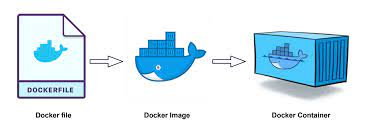

Introduction
Embark on a journey with me as I share insights into creating a predictive diabetes classification model. Learn how to streamline your workflow by hosting a virtual environment using Docker, ensuring seamless software dependency management. Drawing from a group project during my MDS studies, where we explored decision tree and kNN algorithms with the 2015 BFRSS dataset, I’ll guide you through the process of developing scripts and analysis pipeline for non-interactive data analysis. While I won’t delve into the projects findings here, you can explore the complete source code and report here.
Demystifying Docker: A High-Level Introduction to Containerization
Containers serve as a power solution for creating isolated computational environments. Distinct from virtual environments, they offer enhances isolation from the host operating system and provide a versatile platform for sharing various software, applications, and operating system dependencies. One of the most prevalent questions that often arises is: What is Docker, and why choose Docker?
Docker, as a containerization software, is a platform meticulously crafted to empower developers in constructing, sharing, and executing container applications, thereby eliminating the hassles associated with intricate environment setups. We’ve all been through the common yet exasperating scenario in collaborative projects: ‘It works on my end. I am not sure why it isn’t working on your laptop.’
Docker serves as a solution to this issue by allevating the burden of meticulous environment configuration and management. Furthermore, it seamlessly integrates with your existing tools, such as your GitHub repository, offering a consistent and reliable approach to containerized applications.
Installing Docker
To get started, create a free Docker account here.
Once you have signed up and logged into Docket store, proceed to install Docker for your operating system. You can find the installtion instructions for windows here. Follow the steps outlines on the official page for a seamless installation experience.
Quick Tutorial: Running a Simple Container Example
One of the many benefits of container is their ability to provide a platform for sharing various software. Here we will utilize Docker to run a container containing the RStudio server web-application. Ensure that you are signed into your Docker Desktop before proceeding.
docker run --rm -p 8787:8787 -e PASSWORD="yourpassword" rocker/rstudio:4.3.2Breakdown of the command
- The
-pflag informs Docker that a port will be used to access RStudio in your web browser, with the specified location as8787:8787. - The
-rmoption ensures that when you exit the container, it is automatically deleted, preventing manual removal and saving disk space. - The
-eflag is used to set environment variables within the container. Environment variables are key-value pairs that can be passed to a Docker container providing a way to configure the containerized application or modify its behaviour based on these varibles.-e PASSWORD="yourpassword"sets the password for logging into the RStudio web app as ‘yourpassword’.
If this is your first time running this Docker container, Docker will automatically search for the container on DockerHub (equivalent to GitHub but for Docker images) and download it if it exists. The specified version 4.3.2, indicates the specific RStudio version to download from DockerHub.
You can now access your local web app at http:\\localhost:8787. Log into RStudio web app using: ‘rstudio’ as the username and ‘yourpassword’ as the password.
Building the Docker Image from a Widely-Used DockerHub Container Registry
A container registry serves as a remote repository or collection of repositories for sharing container images. Notable container registries include DockerHub, Quay, AWS, and more. In this tutorial, we will focus on DockerHub.
It is a common and recommended practice to construct a container image tailored to your project atop a base container image. Utilizing a base image ensures a clean and reproducible environment, facilitating effective dependency management. The advantages extend beyond consistensy, efficiency, reproducibility, and security.
For our group project, coded in Python Language, we opted for a Jupyter minimal-notebook image from quay.io, equipped with ipykernel, ipython, and jupyterLab for a dynamic notebook experience. To integrate this base image, a DockerFile is required. A Dockerfile serves as a script guiding the creation of a Docker image offering instructions for Docker to follow in building a container image specific to an application or service. The primary purposes of a Dockerfile are to define the base image and install specific dependencies. It is advisable to specify version numbvers for dependencies to prevent potential clashes in the future.

Breakdown of the Dockerfile
Our Dockerfile is structured as follows:
FROM quay.io/jupyter/minimal-notebook:2023-11-19
# base image comes with ipykernel, ipython, jupyterLab
RUN conda install -y pandas=2.1.3 \
altair=5.1.2 \
scikit-learn=1.3.2 \
vegafusion=1.4.5 \
vegafusion-python-embed \
click=8.1.7 \
jupyter-book=0.15.1 \
make=4.3
RUN pip install vl-convert-python==1.1.0 \
pytest==7.4.3 \
ucimlrepo==0.0.3 \
myst-nb==0.17.2A typical Dockerfile commences with a FROM command, specifying the base image upon which the new image will be built off. Docker images are constructed in layers to maintain a lightweight profile. The subsequent RUN commands install new software or execute configuration commands. To enhance redability and organization, the installation process is segmented based on the channels from which dependencies are sourced. In this instance, dependencies installed through conda are grouped together, while those installed via pip are managed separately. The -y flag is essential for the conda command, requiring approval of dependencies before installation when using the conda channel.
To ensure the Dockerfile functions as intended, we verify its functionality by building the image locally. Run the following command from the directory where the Dockerfile is situated:
docker build --tag diabetes_classification:v1 .
docker run --rm -it diabetes_classification:v1- The
--tagflag designates the name of the Docker Image. Here, it is set to ‘test1’ with a version number of ‘v1’ - The
.denotes the current working directory, indicating that the Dockerfile is located in the same directory where the command is executed
Press Ctrl + C to shut down this jupyter notebook.
Launching Docker Image in a container
Launching the image as a container typically involves using the docker run command. However, this command can become complex with multiple flags for environment configuration, making it error-prone. To simplify this process and enhance managemability, the docker-compose.yml file is employed to define how the container should be launched.
To initiate the container interactively using the docker-compose.yml file, execute the following command: docker-compose up. This ensures a streamlined and error-resistant approach to container deployment.
Breakdown of the YAML file
Our docker-compose.yml is structured as follows:
services:
jupyter:
image: diabetes_classification:v1
volumes:
- .:/home/jovyan
ports:
- 8888:8888
deploy:
resources:
limits:
memory: 5G
platform: linux/amd64- services: This section defines the services that compose our application.
- jupyter: This is the name of our service, representing a Jupyter container.
- image: diabetes_classification:v1: Specifies the Docker image to use for the jupyter service. It’s tagged as version v1.
- volumes: Defines the volume mount between the host machine and the container.
.-/home/jovyanmounts the current directory (.) to the /home/jovyan directory inside the container. This allows data to be shared between the host and the Jupyter container. - ports: Maps the host machine’s port to the container’s port.
8888:8888maps port 8888 on the host to port 8888 in the Jupyter container. - deploy: Provides additional deployment options for the service.
- resources: Specifies resource limits for the service.
- limits:: Sets limits on resource usage.
- memory: 5G: Limits the memory usage of the jupyter service to 5 gigabytes.
- platform: linux/amd64: Specifies the platform for which the image is built. In this case, it’s configured for the Linux AMD64 architecture.
To host the container, use the follwing command from the directory where the Dockerfile and docker-compose.yml are situated:
docker-compose upPress Ctrl + C to gracefully shut down this jupyter notebook.
Congratulations! You have successfully built a DockerImage and launched it in an isolated container tailored for your specific project.
Conclusion
In conclusion, this tutorial has guided you through the process of building and disseminating a virtual environment tailored for a predictive diabetes classification model using Docker. The utilization of Docker for environment management ensures reproducibility and eridicate compatibility concerns. Whether sharing the Dockerfile and docker-compose.yml for others to replicate the environment or pushing the image to DockerHub for convenient access, these practices enhance collaboration and streamline the deployment of your specific project. Embrace the efficiency and consistency that Docker provides, empowering your data science endeavors with a robust and shareable containerized solution.
Additionally, it’s worth nothing that in this project, we implemented a GitHub workflow to automate the building and pushing of updated Dockerfile to our DockerHub which is not covered in this tutorial. This further streamline the process, reinforcing the central concept.
GitHub Source Code
Diabetes model Report
Citation
@online{voon2024,
author = {Voon, Sharon},
title = {Diabetes {Classification} {Model:} {Virtual} {Environment}
Through {Docker}},
date = {2024-02-09},
url = {https://s-voon.github.io/posts/diabetes_classification/},
langid = {en}
}